Assistente de Faturamento e Retorno
Produção -> Beneficiamento -> Vendas -> Assistente de faturamento e retorno.
Após o processo de beneficiamento (industrialização), é necessário retornar os componentes ao cliente e faturar tanto o item beneficiado quanto os componentes próprios utilizados no processo. Para isso, o assistente de faturamento e retorno é utilizado. Esse assistente possui três etapas principais, que podem ser resumidas da seguinte forma:
Etapa 1: Selecionar os itens dos pedidos de venda para faturamento e definir o tipo de documento que será utilizado para o faturamento e retorno.
Etapa 2: Visualizar os itens de terceiros e notas fiscais de entrada selecionados para retorno.
Etapa 3: Visualizar e selecionar itens próprios e quantidades para faturamento.
Segue abaixo mais detalhes sobre cada etapa do assistente:
Etapa 1
No cabeçalho deve ser informado o Código cliente utilizado no pedido de venda e a Filial para que o pedido de venda possa ser localizado e selecionado na grid.
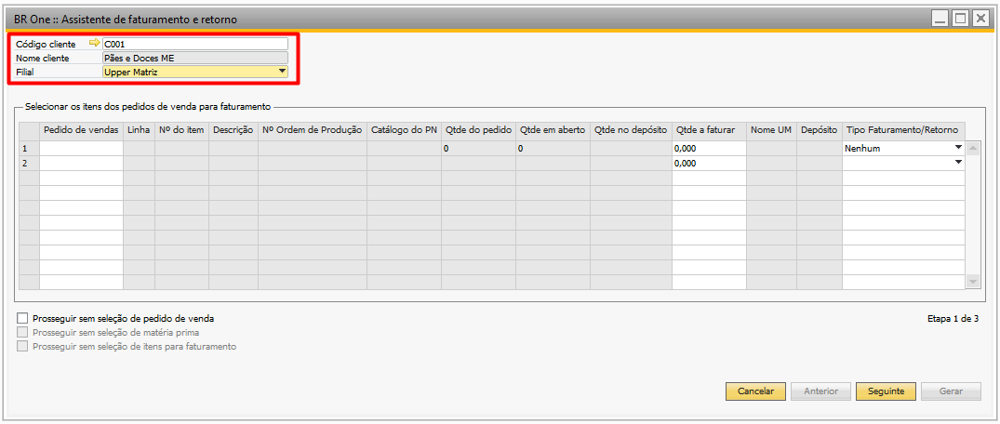{kind=link}
Para a seleção do pedido, é necessário clicar no campo Pedido de vendas e apertar o Tab, serão listados os pedidos de venda da filial do cabeçalho, que tenham linhas com o status em aberto, que pertençam ao cliente do cabeçalho e que possuam a utilização igual a Venda industrialização encomenda ou Venda industrialização triangular.
Note que no exemplo abaixo o mesmo pedido de venda é apresentado em mais de uma linha, mas o número das Ordens de Produção (OPs) são diferentes, isso porque a quantidade do pedido de venda foi dividida em 2 OPs.
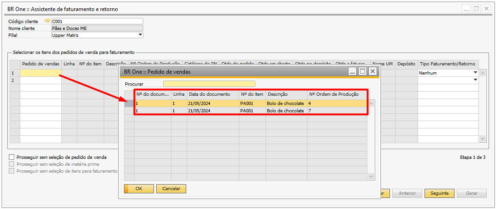 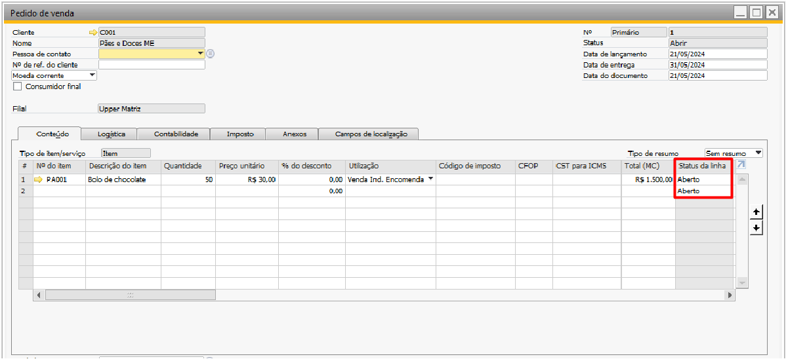 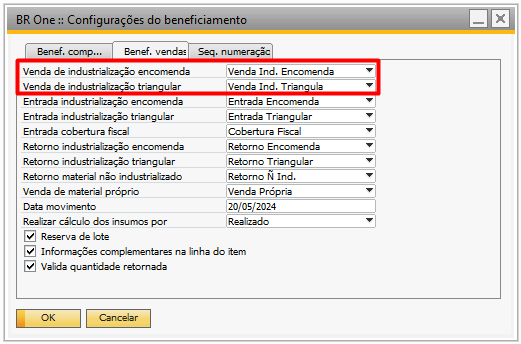{kind=link}
{kind=link}
{kind=link}
Após a seleção do pedido serão apresentadas algumas informações relacionadas ao(s) pedido(s) de venda a ser faturado. Dentre as informações apresentadas estarão o item do pedido (Produto acabado), Nº Ordem de produção, Qtde do pedido, Qtde em aberto (que ainda não houve faturamento) e Qtde no depósito (depósito Benef. Vendas), que é utilizado na linha do item no pedido de venda, no cabeçalho da OP e entrada de PA).
É possível selecionar mais de um pedido para ser faturado ao mesmo tempo na Etapa 1 do assistente, as informações pertinentes a cada pedido estarão disponíveis nas suas linhas.
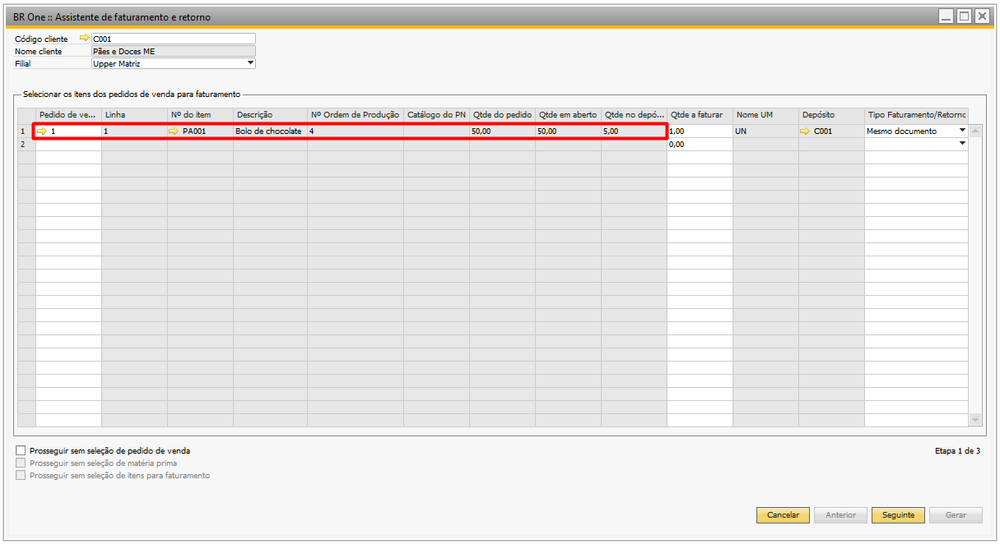{kind=link}
O campo Qtde a faturar deve ser informado pelo cliente com a quantidade que será faturada, ela deve ser maior que zero, menor ou igual a quantidade em aberto.
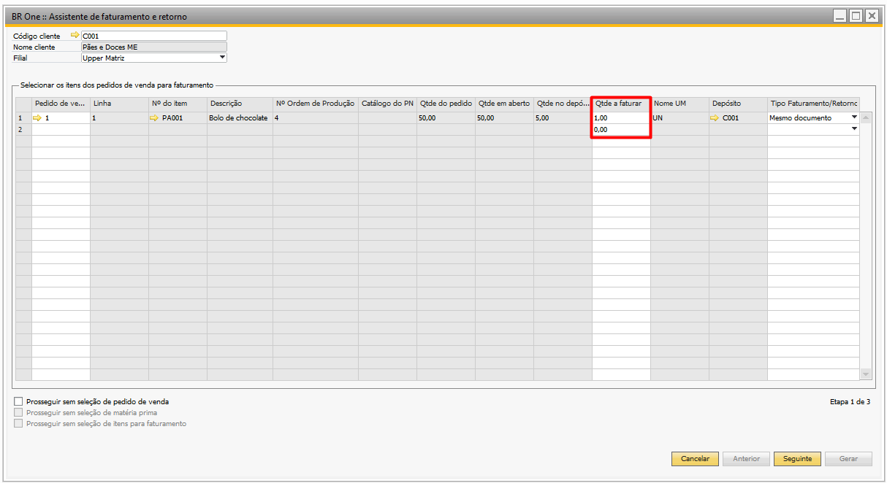{kind=link}
Caso tente passar para a Etapa 2 com a Qtde a faturar igual a zero ou maior que a quantidade em aberto, as mensagens abaixo serão exibidas e não será permitido passar para a Etapa 2.
{kind=link}
BR One :: Não é permitido prosseguir para a etapa 2, pois o campo **Qtde a faturar* deve ser maior que zero na linha 1.*
{kind=link}
BR One :: Não é permitido prosseguir para a **etapa 2*, pois a Qtde a faturar é maior do que a Qtde em aberto na linha 1.*
O campo Tipo de Faturamento/Retorno virá preenchido conforme a configuração definida no cadastro do cliente, mas pode ser alterada manualmente antes de passar para a Etapa 2 do assistente.
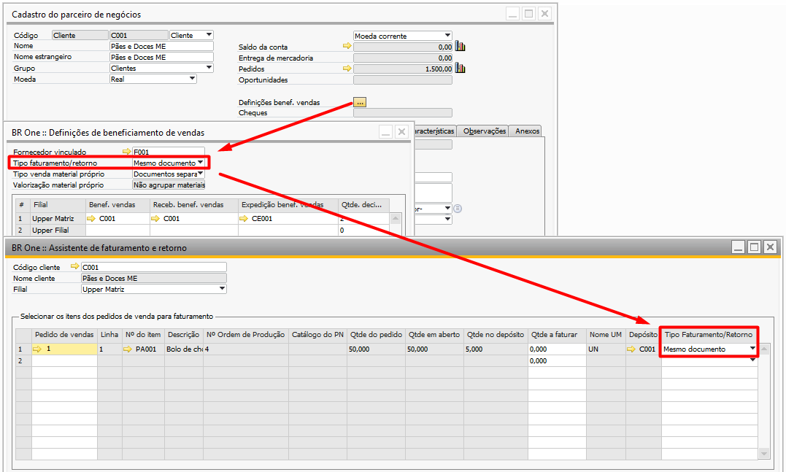{kind=link}
Também é possível passar para a Etapa 2 do assistente sem que um pedido seja inserido, para isso não pode ter nenhum pedido nas linhas e a opção Prosseguir sem seleção de pedido de venda deve ser marcado no rodapé da tela.
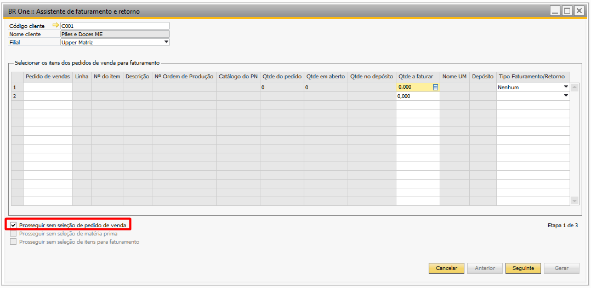{kind=link}
Etapa 2
Ao passar para a Etapa 2 com o(s) pedido(s) de venda selecionado, as informações desse pedido estarão disponíveis para visualização no grid do lado esquerdo da tela conforme a imagem abaixo:
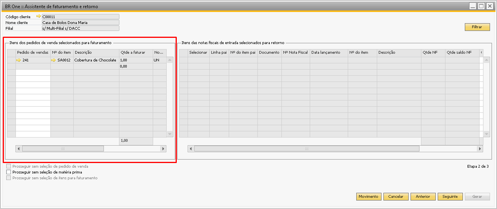 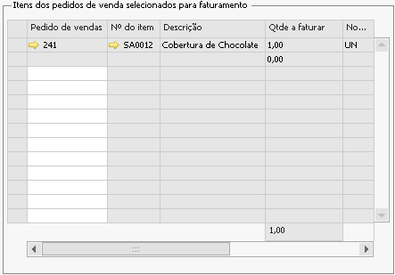{kind=link}
IMPORTANTE
Para que a explosão dos itens de terceiros utilizados nos Semi-Acabados ocorra corretamente, é fundamental considerar o parâmetro Limite de nível do código de baixo nível (LLC), que se encontra na aba MRP das configurações de produção. Este parâmetro determina a quantidade de níveis que será realizada a explosão dos roteiros (Previsto) e das ordens de produção (Realizado), assim listando apenas os itens que estiverem dentro da explosão.
Exemplo: A estrutura do PA possui dois semi-acabados, e dentro de cada um desses semi-acabados, há mais um semi-acabado. Nesse cenário, o PA é composto por quatro níveis. Ao configurar o parâmetro com o valor 1, o resultado será o seguinte:
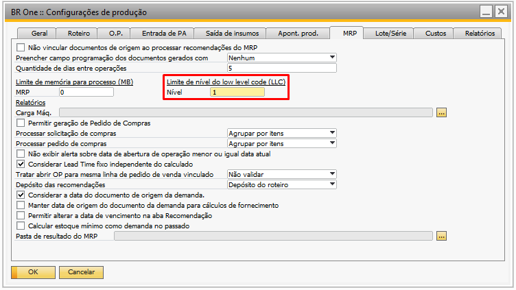 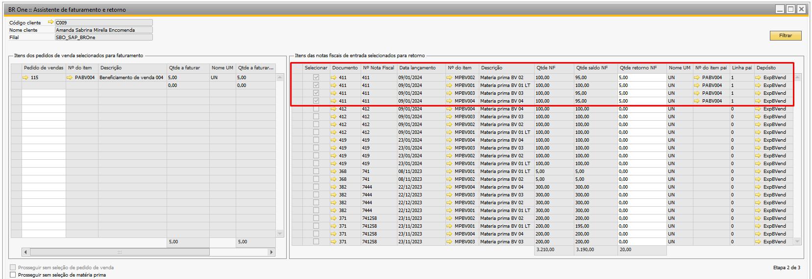{kind=link}
{kind=link}
Podemos observar, que só foi exibido o primeiro nível, que no caso o item PA.
Agora, se nas configurações estiver como quatro ou maior, será exibido todos os semi-acabado.
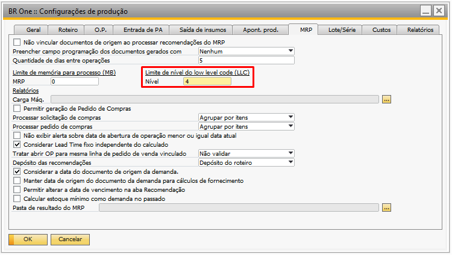 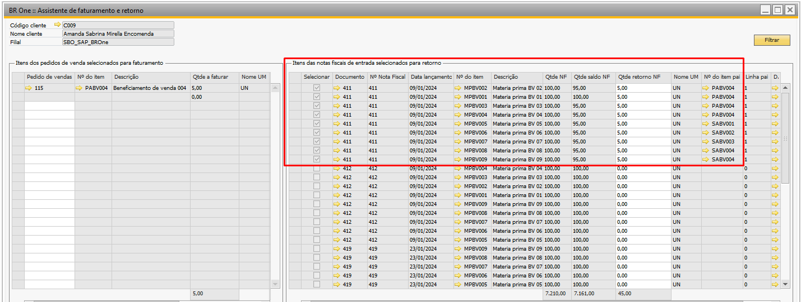{kind=link}
{kind=link}
Para que o lado direito seja exibido é necessário clicar em Filtrar, e serão apresentados os materiais de terceiros para retorno baseando-se no Roteiro (Previsto) ou Ordem de produção (Realizado) do item beneficiado e nas Notas Fiscais de Entrada. Apenas as notas que possuem utilização igual a Entrada industrialização encomenda, Entrada industrialização triangular e Entrada cobertura fiscal serão apresentadas, e a exibição dependerá da utilização do(s) pedido(s) de venda:
Pedido de venda selecionado na Etapa 1 com a utilização Venda de industrialização encomenda aparecerão apenas notas na Etapa 2 com a utilização Entrada industrialização encomenda;
Pedido de venda selecionado na Etapa 1 com a utilização Venda de industrialização triangular aparecerão apenas notas na Etapa 2 com a utilização Entrada cobertura fiscal;
Etapa 1 com a opção Prosseguir sem seleção de pedido de venda selecionada aparecerão as notas com as utilizações: Entrada industrialização encomenda e Entrada cobertura fiscal.
Caso na Etapa 1 tenha sido selecionado um pedido de venda por exemplo com a utilização Venda de industrialização triangular mas na Etapa 2 o sistema não encontre nenhuma NF de entrada com a utilização Entrada industrialização triangular ele mostrará todas as notas encontradas na base com as utilizações Entrada industrialização triangular e Entrada industrialização encomenda, nenhuma nota estará selecionada e a mensagem abaixo será exibida:
{kind=link}
BR One: Não foi encontrada nenhuma nota fiscal de entrada correspondente.
Se a configuração Permitir retornar NF’s triangular e encomenda estiver ativada nas configurações do beneficiamento, o filtro de notas por utilização não será aplicado. Nesse caso, serão exibidas as notas fiscais de entrada, tanto com a utilização Entrada industrialização encomenda quanto com a utilização Entrada cobertura fiscal para realizar o retorno dos itens.
Os itens serão apresentados em ordenação crescente de acordo com o campo Nº Nota Fiscal.
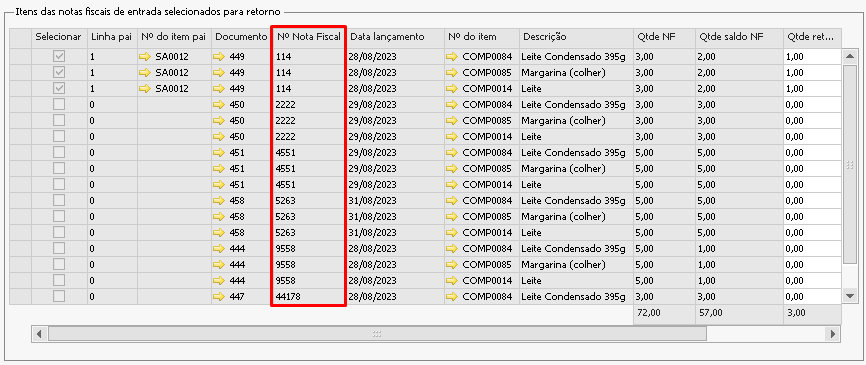{kind=link}
As notas apresentadas vão exibir e selecionar automaticamente os itens de acordo a explosão do Roteiro ou Ordem de Produção do item do PA vendido. Como a seleção ocorre automaticamente de acordo com a ordenação do campo Nº Nota Fiscal não é possível selecionar qual nota fiscal será selecionada.
Como é possível ter componentes de terceiros nas estruturas de semi-acabados, a coluna Nº do item pai será útil para visualizar a qual estrutura aquele componente pertence.
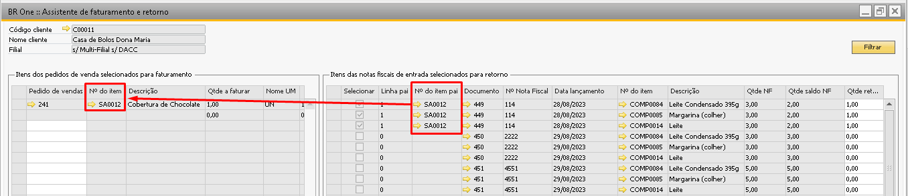{kind=link}
O campo Documento exibirá o Nº do cabeçalho da Nota fiscal de entrada.
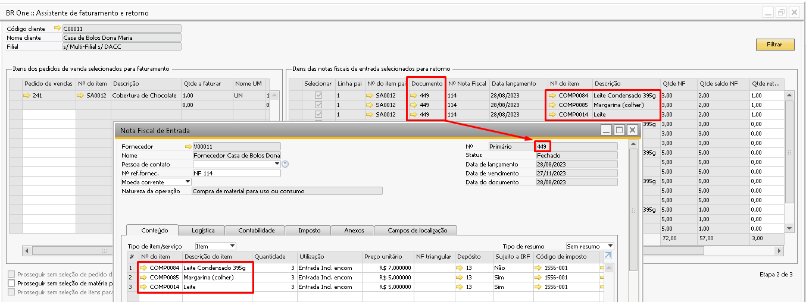{kind=link}
Já o campo Serial vai exibir o campo Serial da Nota fiscal de entrada:
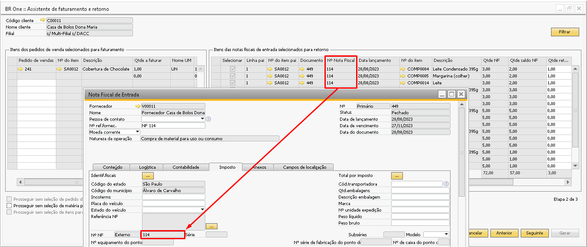{kind=link}
O campo Data de lançamento apresentará a mesma data informada no campo Data de lançamento da Nota fiscal de entrada.
Os campos Nº do item, Descrição, Qtde NF e Nome da UM apresentarão os dados informados nas linhas dos itens da Nota fiscal de entrada conforme abaixo:
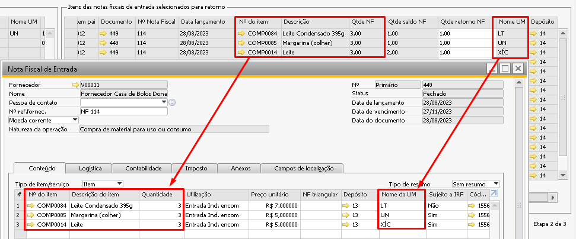{kind=link}
O campo Qtde Saldo NF mostrará a quantidade de componentes de terceiros que ainda não houve retorno para o cliente. A imagem abaixo mostra a tela Controle de estoque de terceiro (botão Oper. adicionais > Controle estoque terceiro) da NF 449 onde as quantidades para cada componentes na nota de entrada é de 3, mas já houve devolução de 1 componente de cada linha, restando o saldo de 2 para que possa ser retornado.
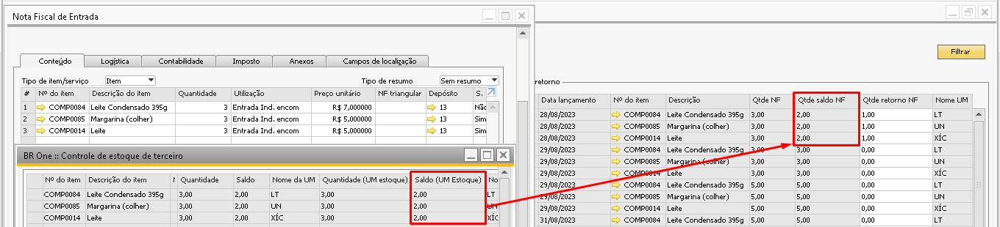{kind=link}
Para o campo Qtde Retorno NF o seu comportamento será determinado a partir da configuração Realizar cálculo dos insumos por definida na tela de BR :: Configurações do beneficiamento, quando estiver como Previsto terá um comportamento e quando estiver como Realizado terá outro comportamento. Cada comportamento será explicado abaixo.
Realizar cálculo dos insumos por: Previsto
O campo Qtde Retorno NF vai exibir a quantidade com base no roteiro do item e multiplicar pela quantidade porém, este campo fica aberto para selecionar a quantidade que será retornada daquele componente para o cliente. Caso o cliente altere a quantidade, ela não poderá ser maior que o campo Qtde saldo NF. Essa quantidade fica aberta para que seja alterada pois, pode haver situações em que no processo de beneficiamento utilizou-se de componentes a mais ou a menos do que o esperado
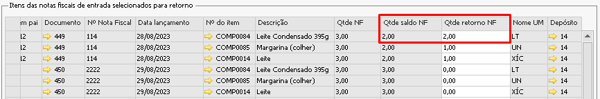{kind=link}
Notem que quando a configuração Realizar cálculo dos insumos por está configurado para previsto a coluna de Refugo não é exibida, isso porque a quantidade de refugo virá somada ao campo Quantidade retorno NF com base no preenchimento do campo % de refugo benef. Vendas da Aba Dados de produção do cadastro do item.
Caso o usuário tente informar no campo Qtde retorno NF maior que a quantidade disponível no campo Qtde saldo NF a mensagem abaixo impedirá o avanço para a Etapa 3.
{kind=link}
BR One :: Não é permitido prosseguir para etapa 3, pois o valor do campo **Qtde retorno NF* é maior que o valor do campo Qtde saldo NF.*
Realizar cálculo dos insumos por: Realizado
A quantidade exibida no campo Qtde Retorno NF quando a configuração está como realizado vai depender se a OP está aberta ou se está fechada, isso porque os cálculos deste campo são diferentes em cada Status, segue definição de cada um:
OP Aberta
Componentes para a OP pai:
X = ([Qtd. da linha planejada] / [Qtd. planejado na OP]) * [Qtd a faturar(Etapa1)].
Será validado se X > ([Qtd. apontada do Insumo] - [Qtd. faturada]) retornar a [Qtd. apontada do Insumo] - [Qtd. faturada].
Caso não seja, retornará no campo Qtde Retorno NF o valor de X.
Cálculo para componente da OP Semi-acabados:
X = ([Qtd. da linha planejada do SA] / [Qtd. planejada da OP Pai]) * ([Qtd. da linha planejada do componente] / [Qtd. planejada da OP SA]) * [Qtd a faturar(Etapa1)]
Será validado se X > ([Qtd. apontada do Insumo] - [Qtd. faturada]) retornar a [Qtd. apontada do Insumo] - [Qtd. faturada].
Caso não seja, retornará no campo Qtde Retorno NF o valor de X.
OP Fechada
Componentes para a OP pai:
X = ([Qtd. apontada do Item] - [Qtd. faturada]) / (([Qtd. Apontada na OP PA] - [Qtd. do PA faturada]) / [Qtd a faturar(Etapa1)])
Será validado se X > ([Qtd. apontada do Item] - [Qtd. faturada]) retornar a [Qtd. apontada do Item] - [Qtd. faturada].
Caso não seja, retornará no campo Qtde Retorno NF o valor de X.
Cálculo para componente da OP Semi-acabados:
X = ([Qtd. apontada do Item] - [Qtd. faturada]) / (([Qtd. Apontada na OP PA PAI] - [Qtd. do PA PAI faturada]) / [Qtd a faturar(Etapa1)])
Será validado se X > ([Qtd. apontada do Item] - [Qtd. faturada]) retornar a [Qtd. apontada do Item] - [Qtd. faturada].
Caso não seja, retornará no campo Qtde Retorno NF o valor de X.
Quando o cálculo dos insumos está como Realizado, o campo % de refugo benef. Vendas cadastro do item será desconsiderado para calcular refugo para os itens, isso porque no realizado o sistema calcula as quantidades com base no que foi consumido na Ordem de Produção (OP), sendo assim é preciso validar se na OP houve apontamento de refugos ou não. Com isso é habilitado uma nova coluna na Etapa 2 do assistente de faturamento e retorno, a coluna Qtde refugo.
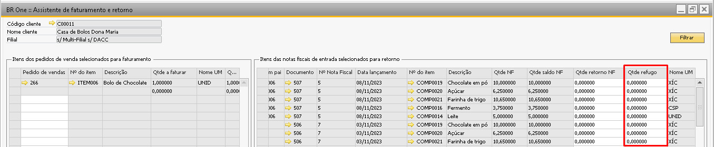{kind=link}
Os cálculos realizados para identificar a quantidade que será exibida nesta coluna são os cálculos abaixo:
OP Aberta
[Qtd. de Refugo do Insumo realizado na OP] - [Qtd. de refugo faturado]
OP Fechada
Componentes para a OP pai:
X = ([Qtd. apontada do Item Refugo] - [Qtd. faturada Refugo]) / (([Qtd. Apontada na OP PA] - [Qtd. do PA faturada]) / [Qtd a faturar(Etapa1)]).
Será validado se X > (Qtd. Apontada do Refugo Item] - [Qtd. faturada]) retornar a [Qtd. Apontada do Refugo Item] - [Qtd. faturada].
Caso não seja, retornará no campo Qtde refugo o valor de X.
Cálculo para componente da OP Semi-acabados:
X = ( [Qtd. apontada do Item Refugo] - [Qtd. faturada Refugo]) / (([Qtd. Apontada na OP PA] - [Qtd. do PA faturada]) / [Qtd a faturar(Etapa1)])
Será validado se X > (Qtd. Apontada do Refugo Item] - [Qtd. faturada]) retornar a [Qtd. Apontada do Refugo Item] - [Qtd. faturada].
Caso não seja, retornará no campo Qtde refugo o valor de X.
Caso não seja necessária a seleção de matéria-prima na Etapa 2, o campo Prosseguir sem seleção de matéria prima pode ser selecionado, porém, caso na Etapa 1 o parâmetro Prosseguir sem seleção de pedido de venda já tiver sido selecionado para avançar para a Etapa 2 o sistema não permitirá avançar para a Etapa 3 com a mensagem abaixo:
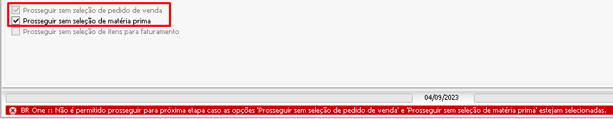{kind=link}
BR One :: Não é permitido prosseguir para próxima etapa caso as opções ‘Prosseguir sem seleção de pedido de venda’ e ‘Prosseguir sem seleção de matéria prima’ estejam selecionadas.
Na Etapa 2 está disponível também o botão Movimento, onde apresentará toda a movimentação dos componentes de terceiro que estiverem selecionados em tela.
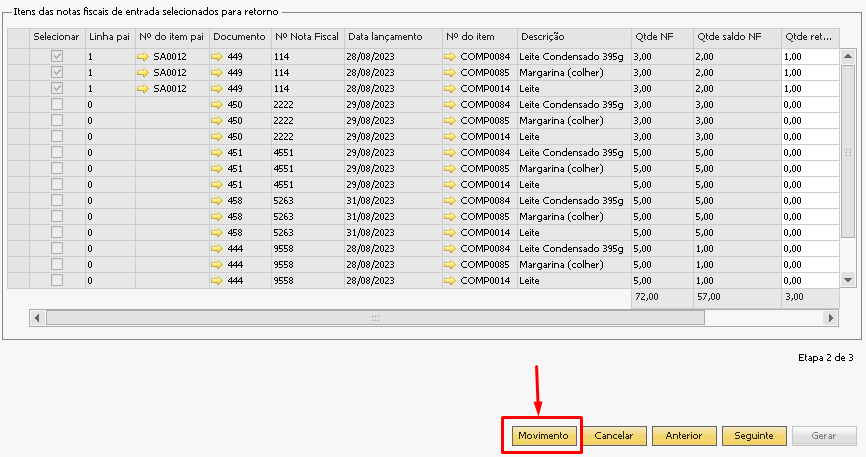{kind=link}
Após selecionarmos o botão Movimento a tela de Movimentação de itens em beneficiamento de vendas será apresentada, lembrando que os saldos estão em Unidade de medida de estoque. Os campos disponíveis para informação são os campos abaixo:
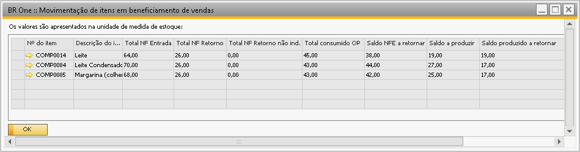{kind=link}
Nº do item: Apresentará o código dos componentes terceiros que compõe o roteiro do PA de Beneficiamento de Vendas.
Descrição do Item: Apresentará descrição/nome dos componentes terceiros que compõe o roteiro do PA de Beneficiamento de Vendas.
Total NF Entrada: Apresentará a soma da quantidade de todos os documentos de Nota Fiscal de Entrada lançadas para o item, com Utilização igual a Entrada industrialização encomenda e Entrada industrialização triangular e que não estejam cancelados.
Total NF Retorno: Apresentará a soma da quantidade de todos os documentos de Devolução de Nota Fiscal de Entrada e também Nota Fiscal de Saída lançados para o item, com Utilização igual a Retorno industrialização encomenda e Retorno industrialização triangular e que não estejam cancelados.
Total NF Retorno não Ind: Apresentará a soma da quantidade de todos os documentos de Devolução de Nota Fiscal de Entrada e também Nota Fiscal de Saída lançados para o item, com Utilização igual a Retorno material não industrializado e que não estejam cancelados.
Total consumido OP: Apresentará a soma da quantidade de todos os registros de Saída de Insumos lançados por Ordem de Produção que geraram documento de Saída de Mercadoria ou Transferência de Estoque e que não estejam cancelados/estornados.
Saldo NFE a retornar: Apresentará por item, o resultado do seguinte cálculo Total NF Entrada (-) Total NF Retorno (-) Total NF Retorno não Ind, isso é, mostrará o saldo da quantidade de itens de terceiros que estão para serem utilizados no processo de industrialização e ainda não foram retornados.
Saldo a produzir: Apresentará por item, o resultado do seguinte cálculo Total NF Entrada (-) Total NF Retorno não Ind. (-) Total consumido em OP, isso é, o saldo dos componentes que entraram para serem utilizados no processo de industrialização e ainda não foram consumidos na OP.
Saldo produzido a retornar: Apresentará por item, o resultado do seguinte cálculo Total consumido em OP (-) Total NF Retorno, isso é, mostrará o saldo de componentes que já foram utilizados no processo de industrialização (transferidos para o depósito de Expedição benef. vendas) e ainda não foram retornados para o parceiro de negócios.
Etapa 3
Na Etapa 3 do Assistente de faturamento e retorno serão demonstrados no quadrante Itens do roteiro selecionados para faturamento de vendas, que são os materiais próprios utilizados no processo de Beneficiamento de Vendas que podem ser faturados.
Somente aparecerá itens na Etapa 3, caso o item esteja marcado como Faturado no roteiro ou na Ordem de Produção, depende da configuração Realizar cálculo dos insumos por e houver seleção de pedido de venda na Etapa 1.
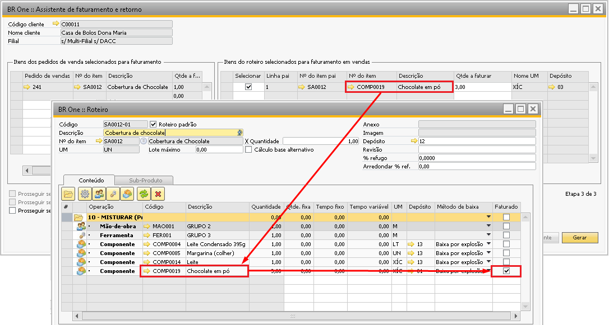{kind=link}
Na Etapa 3 a coluna Selecionar fica disponível caso o usuário queira desmarcar algum item para faturamento. A coluna Qtde a faturar também fica liberada para que o usuário possa informar a quantidade de itens a faturar, pois pode ser que no processo de industrialização houve o consumo menor ou maior destes componentes próprios, sendo necessário ajustar a quantidade a faturar do cliente.
Ao clicar em Gerar aparecerá a tela pedindo pra aguardar pois os esboços dos documentos estão sendo gerados.
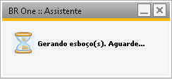{kind=link}
Após a geração, a tela de BR One :: Esboços gerados aparecerá em tela mostrando os esboços que foram gerados para aquela execução do assistente e cliente.
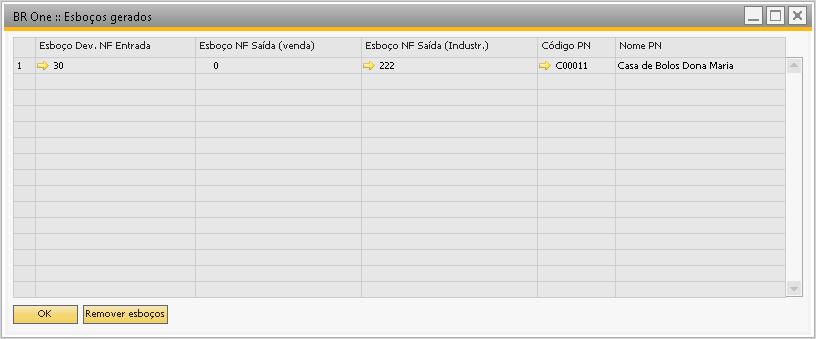{kind=link}
Existem algumas configurações que vão definir quais documentos serão gerados e quais itens serão levados em cada documento. Os itens que podem ou não ser levados para os documentos são: O produto acabado (item do(s) pedido(s) de venda), os componentes de terceiro e os componentes próprios. As configurações são as configurações dos campos abaixo:
Tipo de Faturamento/Retorno
Por padrão este campo no assistente virá conforme o preenchimento da tela Definições do beneficiamento de vendas, do cadastro do cliente, mas pode ser alterado em cada execução no assistente.
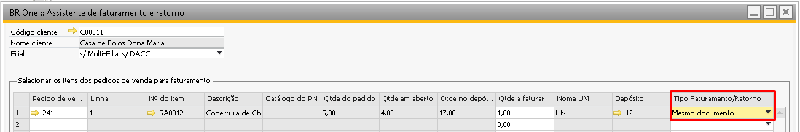{kind=link}
Tipo venda material próprio e Valorização material próprio
{kind=link}
{kind=link}
Segue abaixo as possibilidades de geração de documentos para cada configuração:
Tipo de faturamento/retorno: Mesmo documento
Tipo venda material próprio: Mesmo documento
Valorização material próprio: Não agrupar materiais no valor do serviço
Será gerado um esboço de NF de Saída (Industr.) contendo os componentes de terceiros para serem retornados, o produto acabado e o componente próprio para faturamento. Caso haja refugo, o sistema levará no documento criado uma linha com a quantidade informada no campo Qtde a faturar e outra linha com a quantidade informada no campo Qtde refugo
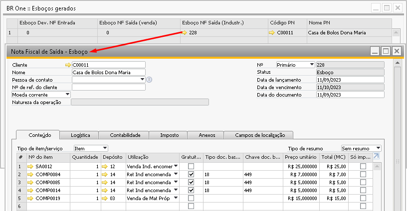{kind=link}
Tipo de faturamento/retorno: Mesmo documento
Tipo venda material próprio: Mesmo documento
Valorização material próprio: Ocultar materiais e agrupar no valor do serviço.
Será gerado esboço NF de Sáida (Industr.) contendo o produto acabado para faturamento e os componentes de terceiro para retorno.
Como a configuração do campo Valorização material próprio está informando para ocultar o material próprio mas somar o valor dele no serviço, o preço unitário do produto acabado será composto por: Preço do produto acabado + soma dos componentes próprios. Acompanhe o cálculo abaixo:
Este é o valor do componente próprio na lista de preços:

E este é o valor do item no pedido de vendas:
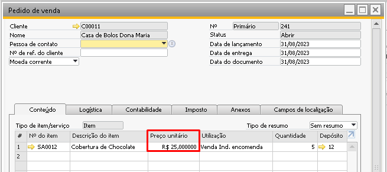{kind=link}
Usando como exemplo a configuração do beneficiamento como planejado, como no roteiro do item para cada produto acabado são utilizados 3 componentes COMP0019, e no assistente de faturamento e retorno foi selecionado apenas 1 item (produto acabado) para retorno, esta é a conta que o sistema realizou para chegar no valor de R$ 70,00 do documento de Esboço NF de Saída (Industr.):
Componentes: 3 * 15,00 = 45,00
Item do pedido: 1 * 25,00 = 25,00
Total: 70,00.
Esta lógica também é válida para quando a configuração está como Realizado, onde identifica o valor do componente e multiplica pela quantidade de componentes definidos na Etapa 2. Caso haja refugo com esta configuração e o cliente queira que o valor do refugo também seja agregado ao valor do serviço é necessário manualmente informar a quantidade de refugo na quantidade encontrada na coluna Qtde a faturar.
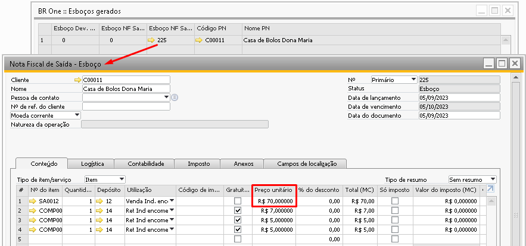{kind=link}
Tipo de faturamento/retorno: Mesmo documento
Tipo venda material próprio: Mesmo documento
Valorização material próprio: Não cobrar valor dos materiais
Será gerado esboço de NF de Saída contendo o produto acabado para ser faturado e os componentes de terceiros para serem retornados. Como o campo Valorização material próprio está informado para não cobrar valor dos materiais próprios o mesmo não será levado para o documento de faturamento e não terá o seu valor cobrado do cliente.
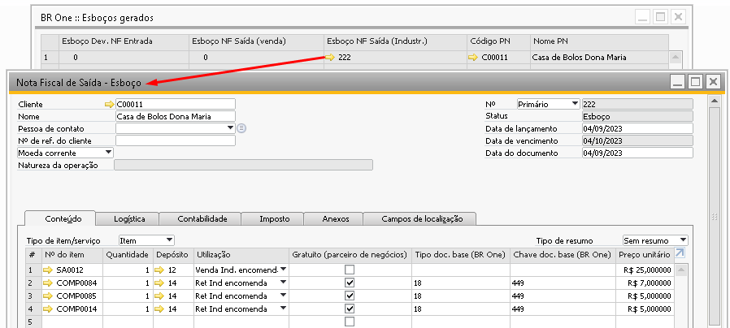{kind=link}
Tipo de faturamento/retorno: Mesmo documento
Tipo venda material próprio: Mesmo documento
Valorização material próprio: Não agrupar materiais no valor do serviço
Será gerado um esboço de NF de Saída (Industr.) contendo o produto acabado, os componentes de terceiros para retorno e o componente próprio para faturamento.
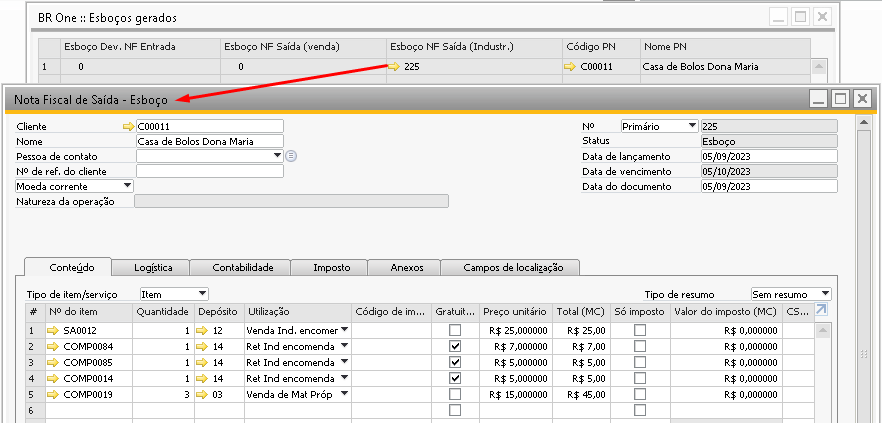{kind=link}
Tipo de faturamento/retorno: Documentos separados
Tipo venda material próprio: Mesmo documento
Valorização material próprio: Não agrupar materiais no valor do serviço
Será gerado Esboço Dev. NF Entrada contendo os componentes de terceiros para retorno e Esboço NF Saída (Industr.), contendo o item do pedido de vendas e componente próprio para faturamento.
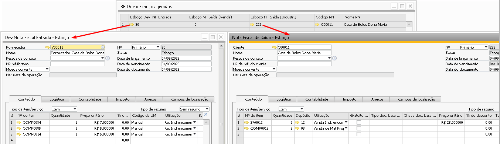{kind=link}
Tipo de faturamento/retorno: Documentos separados
Tipo venda material próprio: Mesmo documento
Valorização material próprio: Ocultar materiais e agrupar no valor do serviço
Será gerado Esboço Dev. NF Entrada contendo os componentes de terceiros e Esboço NF Saída (Industr.) contendo apenas o item do pedido de vendas. Note que o componente próprio não está no documento de NF de saída, mas o valor do componente é somado ao campo Preço Unitário do item do pedido:
{kind=link}
Este é o valor do componente na lista de preços:
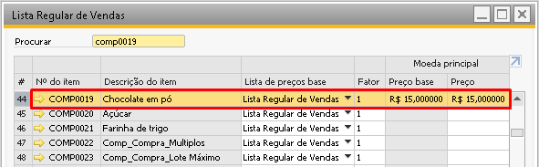{kind=link}
E este é o valor do item no pedido de vendas:
{kind=link}
Usando como exemplo a configuração do beneficiamento como planejado, como no roteiro do item para cada produto acabado são utilizados 3 componentes COMP0019, e no assistente de faturamento e retorno foi selecionado apenas 1 item (produto acabado) para retorno, esta é a conta que o sistema realizou para chegar no valor de R$ 70,00 do documento de Esboço NF de Saída (Industr.):
Componentes: 3 * 15,00 = 45,00
Item do pedido: 1 * 25,00 = 25,00
Total: 70,00.
Esta lógica também é válida para quando a configuração está como realizado, onde identifica o valor do componente e multiplica pela quantidade de componentes definidos na Etapa 2. Caso haja refugo com esta configuração e o cliente queira que o valor do refugo também seja agregado ao valor do serviço é necessário manualmente informar a quantidade de refugo na quantidade encontrada na coluna Qtde a faturar.
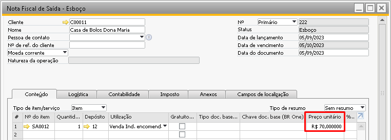{kind=link}
Tipo de faturamento/retorno: Documentos separados
Tipo venda material próprio: Mesmo documento
Valorização material próprio: Não cobrar o valor dos materiais
Será gerado Esboço Dev. NF Entrada contendo os componentes de terceiros e Esboço NF Saída (Industr.) contendo apenas o item do pedido de vendas, note que como a configuração está definida para não cobrar o valor dos materiais, o valor dos componentes próprios não será agregado ao item do pedido no esboço de NF Saída (Industr.).
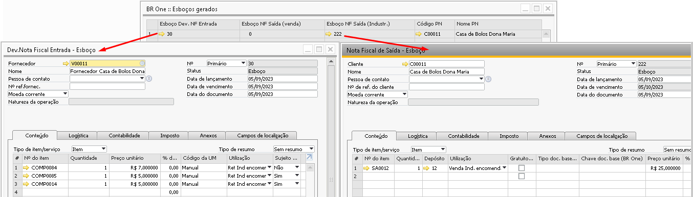{kind=link}
Tipo de faturamento/retorno: Documentos separados
Tipo venda material próprio: Documentos separados
Valorização material próprio: Não cobrar o valor dos materiais
Será gerado um Esboço Dev. NF Entrada contendo os componentes de terceiros para retorno, um Esboço de NF Saída (Venda) contendo o componente próprio para faturamento e um esboço de NF de Saída (Industr.) com o produto acabado para faturamento.
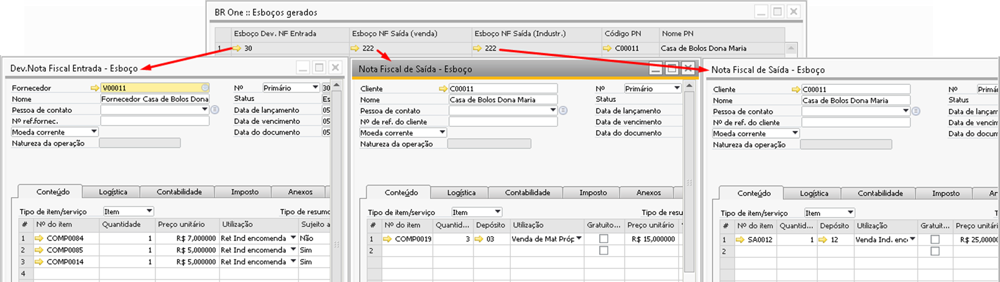{kind=link}
Caso ao gerar os esboços o usuário perceba que não é a configuração que ele deseja, é possível fechar os esboços abertos em tela e clicar no botão Remover esboços, desta forma os esboços criados serão removidos e o usuário executar o assistente novamente, ajustar as configurações e gerar novos esboços. Não é possível fechar a tela sem adicionar ou remover os esboços pois a mensagem abaixo impedirá o fechamento:
{kind=link}
BR One :: Não é possível fechar o formulário, pois existe esboço gerado não efetivado.
Caso não haja seleção de pedido de venda na Etapa 1, e houver seleção de matéria prima na Etapa 2, não serão apresentados itens na Etapa 3 e será gerado um esboço de NF de Dev. de Entrada, para que a devolução dos componentes não industrializados seja realizada.
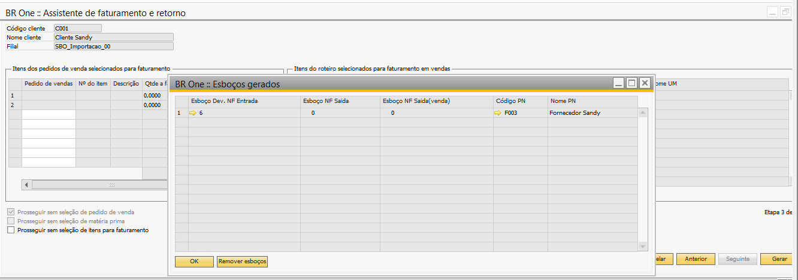{kind=link}